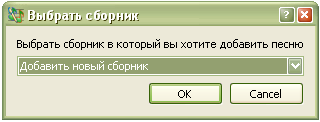

3.1 Добавление новых песен
Добавить новую песню:
Новые песни можно добавлять только на этой закладке.
Горячие клавиши: Crtl+N
 Выберите существующий сборник или создайте новый, в который вы хотите добавить песню.
Подробнее о добавлении нового сборника — здесь,
и о редактировании песен — здесь .
Номер следующей песни программа задает автоматически.
При желании, можно изменить заданный программой номер.
Все песни должны иметь название. Любые не алфавитно-номерные знаки автоматически удаляются из названия.
Это необходимо для нормальной работы поиска / фильтрования песен.
"Слова".
"Музыка".
Текст необходимо должным образом отформатировать,
чтобы не было сбоев в работе программы и текст выводился на экран правильно. Подробнее о форматировании —
здесь.
Если вы не желаете сохранить внесенные изменения, нажмите на кнопку "Отмена".
После нажатия на кнопку "Сохранить", должно пройти несколько секунд, пока песня загрузится в базу данных.